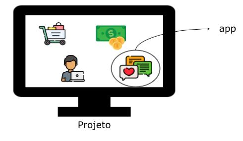
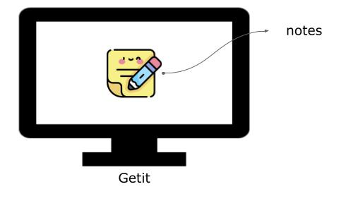
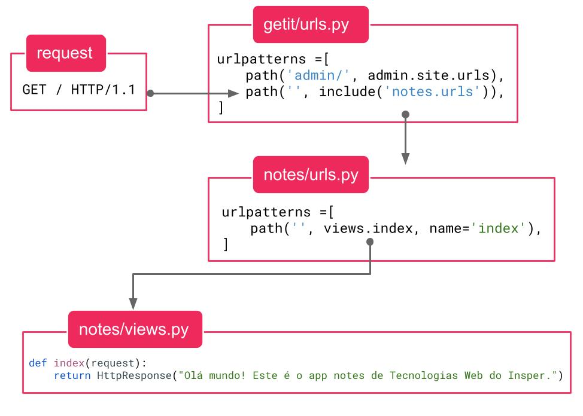

Parte 2: Criando nosso primeiro app¶
Precisamos começar definindo uma importante diferença de conceitos no Django: projetos e apps. Apps são partes de um sistema responsáveis por uma tarefa específica. Um projeto é um conjunto de um ou mais apps e pode ser entendido como o sistema em si. Por exemplo: podemos ter um app responsável pelas anotações, outro app responsável pelo pagamento e outras operações financeiras, outro app responsável por implementar um tipo de autenticação customizada do seu sistema, e assim por diante. Todos esses apps podem ser utilizados em um mesmo projeto.

Feita a diferenciação dos conceitos, no nosso caso vamos provavelmente ter apenas um app dentro do nosso projeto. Vamos criar o app chamado notes, no qual vamos reimplementar as funcionalidades do Projeto 1A.

Execute o seguinte comando:
python manage.py startapp notes
Ele vai criar um diretório com alguns arquivos. Por enquanto não vamos entrar em detalhes sobre o que cada um deles faz. Quando precisarmos de algum deles nós explicaremos a sua função.
Aprofundando os conhecimentos sobre uma biblioteca
Acabamos de ver que o programa manage.py possui comandos que criam estruturas inteiras de arquivos. Ainda veremos alguns outros comandos até mais interessantes. No caso do startapp, você poderia criar cada um desses arquivos manualmente e o resultado seria o mesmo. O comando apenas facilita esse processo, que sempre será o mesmo (é o que chamamos de boilerplate, lembra?), mas é importante que aos poucos você entenda mais a fundo o que realmente acontece. Não teremos tempo para isso na disciplina, então vai depender de você se aprofundar nos temas e bibliotecas que te interessem. No momento, não importa qual, mas é importante que você se aprofunde em alguma.
O hello world, de novo¶
Nossa primeira tarefa será fazer um hello world usando o Django. Queremos que, ao acessar a página http://localhost:8000 o usuário veja o texto "Olá mundo! Este é o app notes de Tecnologias Web do Insper." na tela do navegador.
Para isso, abra o arquivo notes/views.py. Nesse arquivo nós definiremos as nossas views. No contexto do Django, uma view é uma função que recebe uma requisição (com todos os parâmetros já processados e armazenados em um objeto) e devolve uma resposta.
Exercício
Substitua o conteúdo do arquivo pelo conteúdo a seguir:
from django.http import HttpResponse
def index(request):
return HttpResponse("Olá mundo! Este é o app notes de Tecnologias Web do Insper.")
Salve seu arquivo.
Dica
Você pode deixar um terminal rodando o comando python manage.py runserver sem parar. Assim que você salva um arquivo o servidor de desenvolvimento vai reiniciar automaticamente e o novo código será utilizado.
Visite a sua página em http://localhost:8000.
Você não achou que seria tão fácil assim, não é mesmo? Como o Django sabe que deve utilizar a função index() ao invés de qualquer outra? Exatamente, ele não sabe.
Na parte anterior vimos que foi criado um arquivo getit/urls.py que vai controlar as rotas do nosso projeto. O arquivo urls.py é o responsável por associar uma rota a uma view. Nós poderíamos apenas modificar o getit/urls.py, mas para aumentarmos o encapsulamento vamos criar um arquivo notes/urls.py que vai controlar apenas as rotas relacionadas ao app notes.
Exercício
Crie o arquivo notes/urls.py com o seguinte conteúdo:
from django.urls import path
from . import views
urlpatterns = [
path('', views.index, name='index'),
]
Estamos essencialmente dizendo para o Django que, quando a rota vazia ('') for acessada, ele deve utilizar a função views.index para construir a resposta.
Importante
Note que passamos views.index como argumento. Isso quer dizer que a função em si é usada como argumento. Ela ainda não foi executada. Ela só será executada quando a rota for acessada por um cliente. Podemos fazer isso porque em Python, funções são objetos de primeira classe. Isso significa que funções podem ser armazenadas em variáveis, passadas como argumentos de funções e armazenar atributos como qualquer outro objeto em Python.
Ainda falta um detalhe. O arquivo responsável pelas rotas é o getit/urls.py, não o notes/urls.py. Precisamos fazer essa associação.
Exercício
Abra o arquivo getit/urls.py e substitua o seu conteúdo por:
from django.contrib import admin
from django.urls import include, path
urlpatterns = [
path('admin/', admin.site.urls),
path('', include('notes.urls')),
]
Agora sim, teste sua página. O texto "Olá mundo! Este é o app notes de Tecnologias Web do Insper." deve aparecer no navegador.
A função include fala para o Django incluir na rota especificada (no caso a rota vazia '') todas as rotas definidas no arquivo notes/urls.py. Ao receber uma requisição, o Django percorre a lista urlpatterns do arquivo getit/urls.py procurando a primeira rota que seja igual à rota solicitada. Por esse motivo, a ordem dos elementos da lista urlpatterns é muito importante: em caso de duas rotas com o mesmo nome, será escolhida a que ocorrer primeiro.

Por enquanto ainda não vimos muitas vantagens em usar o Django. No Projeto 1A nós fizemos o hello world com muito menos código (e arquivos!). Mas vai melhorar, prometo! Por enquanto, siga para o próximo passo.